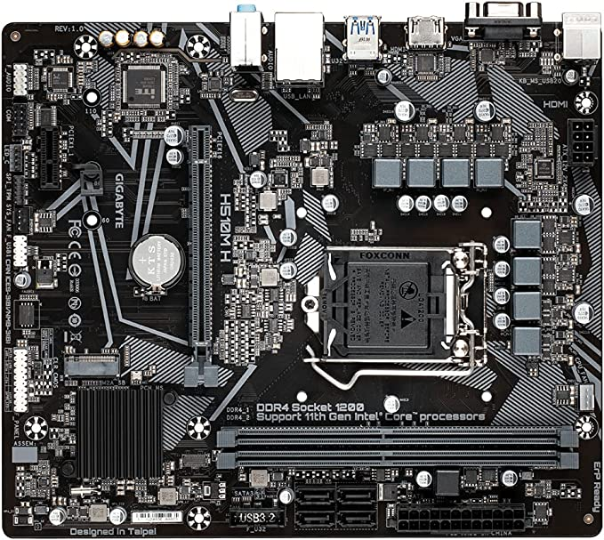
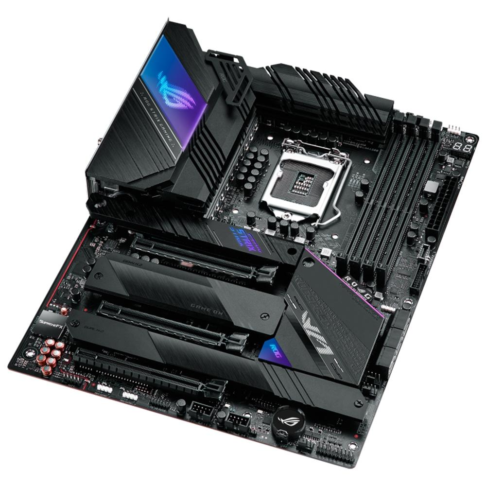
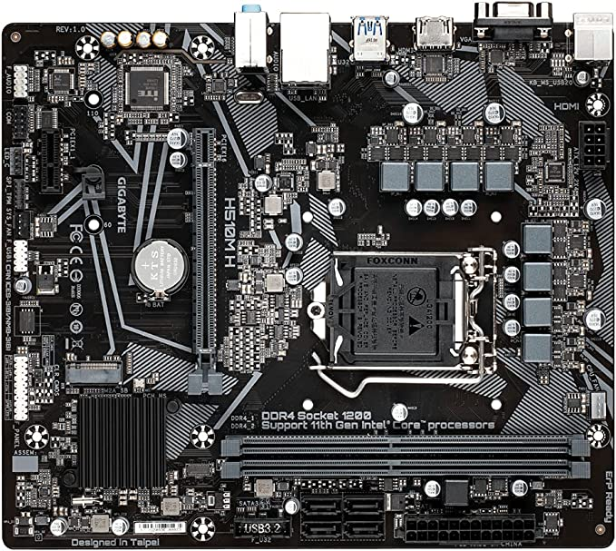
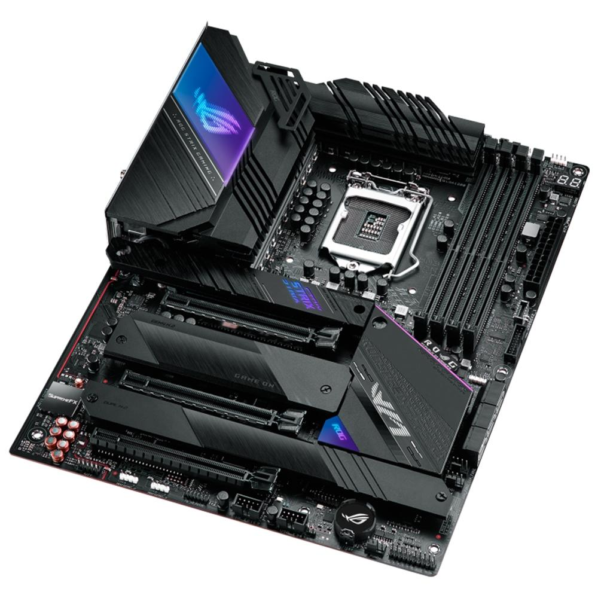

logo
logoPlaca Mãe PCWare IPX4020E - OEM | FGTEC

R$335,68
Gigabyte PLACA MAE (INTEL) H510M H DDR4 LGA 1200 10° E 11° GERACAO
R$559,00
Placa-Mãe Asus Rog Strix Z590-E Gaming Wifi, Intel, mATX, DDR4, RGB, Wifi, - 90MB1640-M0EAY0
R$ 2.299,99

Placa Mãe PCWare IPX4020E - OEM | FGTEC
Gigabyte PLACA MAE (INTEL) H510M H DDR4 LGA 1200 10° E 11° GERACAO
Placa-Mãe Asus Rog Strix Z590-E Gaming Wifi, Intel, mATX, DDR4, RGB, Wifi, - 90MB1640-M0EAY0
